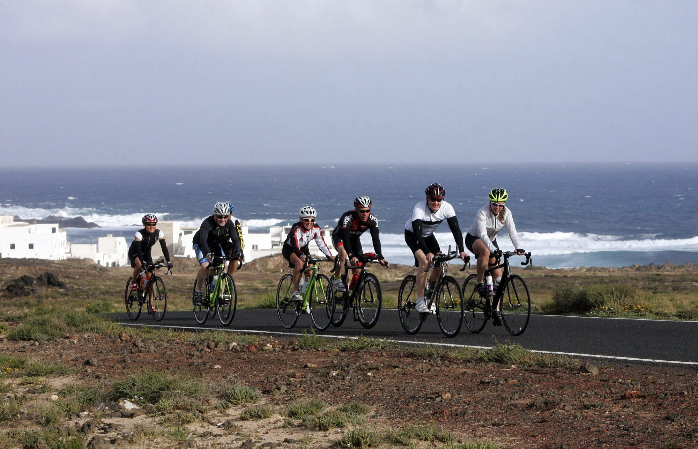

Stories that move endurance sport.
Clear reporting and editorial storytelling, shaped by decades inside the sport.
Who it serves
For editors, events and endurance brands.
Reporting with enough sport knowledge to ask the right questions—and enough editorial discipline to keep the story clear.
Reporting · Profiles · Interviews · Race coverage · Features
Approach
Know the sport. Find the story.
Every assignment begins with the audience, the angle and the deadline. Mackatak brings decades of endurance-sport context to the reporting, then delivers clean editorial work built for the publication.
Brief. Report. Deliver.
Good to know
A few quick answers.
What assignments does Mackatak take on?
Reporting, profiles, interviews, race coverage and feature storytelling within endurance sport.
Who does Mackatak work with?
Editors, event teams and endurance brands looking for informed, credible editorial work.
How does a project begin?
Share the audience, editorial brief and deadline. Mackatak will respond with a focused next step.
Have a story in mind?
Send the brief, audience and deadline.
Connect